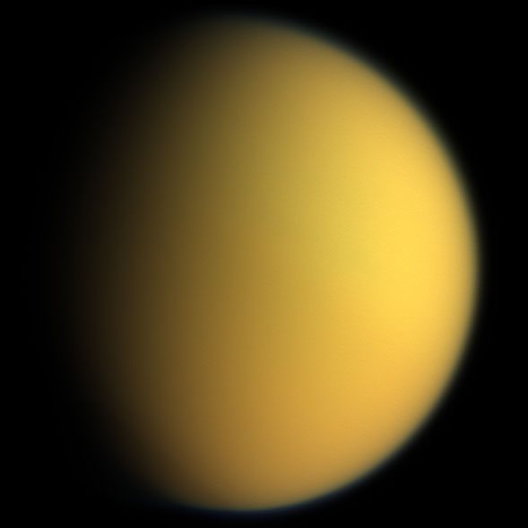

Pandora
Pandora (/pænˈdɔərə/ pan-dohr-ə; Greek: Πανδώρα) is an inner satellite of Saturn. It was discovered in 1980 from photos taken by the Voyager 1 probe, and was provisionally designated S/1980 S 26.[3] In late 1985 it was officially named after Pandora from Greek mythology.[4] It is also designated as Saturn XVII.
- Diameter (km)
- 104 × 81 × 64 km
- Mass (kg)
- (1.371±0.019)×1017 kg
- Orbital Period
- 0.628504213 d

Titan
Titan (or Saturn VI) is the largest moon of Saturn. It is the only natural satellite known to have a dense atmosphere,[9] and the only object other than Earth for which clear evidence of stable bodies of surface liquid has been found.
- Diameter (km)
- 2576±2 km
- Mass (kg)
- (1.3452±0.0002)×1023 kg
- Orbital Period
- 15.945 d